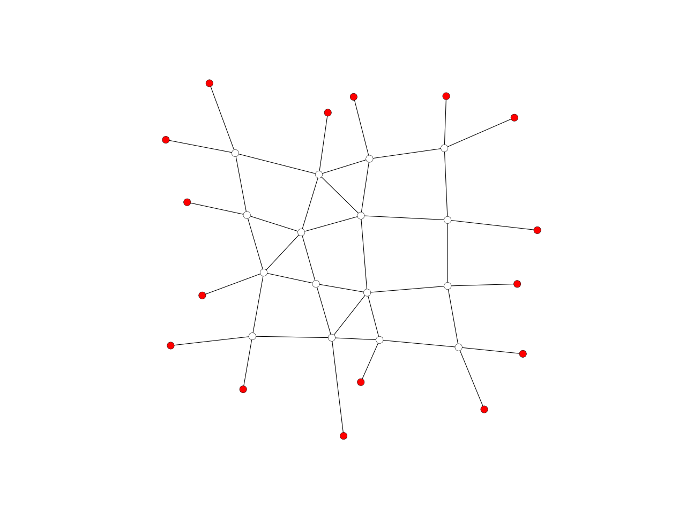

network_smooth_centroid
-
compas.geometry.network_smooth_centroid(network, fixed=None, kmax=100, damping=1.0, callback=None, callback_args=None)[source] Smooth a network by moving each vertex to the centroid of its neighbours.
- Parameters
network (Mesh) – A network object.
fixed (list, optional) – The fixed vertices of the mesh.
kmax (int, optional) – The maximum number of iterations.
damping (float, optional) – The damping factor.
callback (callable, optional) – A user-defined callback function to be executed after every iteration.
callback_args (list, optional) – A list of arguments to be passed to the callback.
- Raises
Exception– If a callback is provided, but it is not callable.
Examples
import compas from compas.datastructures import Network from compas.plotters import NetworkPlotter from compas.geometry import network_smooth_centroid network = Network.from_obj(compas.get('grid_irregular.obj')) fixed = [key for key in network.vertices() if network.vertex_degree(key) == 1] network_smooth_centroid(network, fixed=fixed) plotter = NetworkPlotter(network) plotter.draw_vertices(facecolor={key: '#ff0000' for key in fixed}) plotter.draw_edges() plotter.show()
